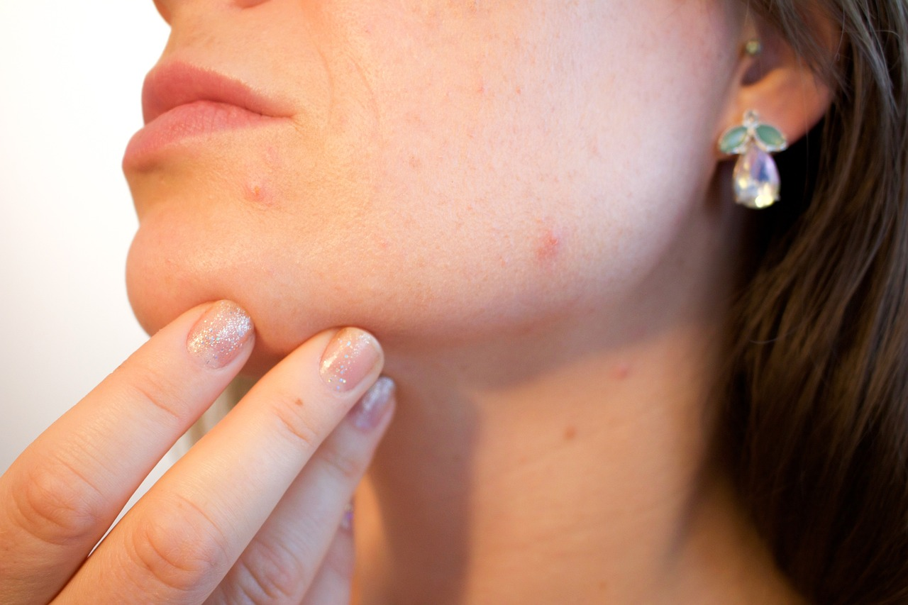
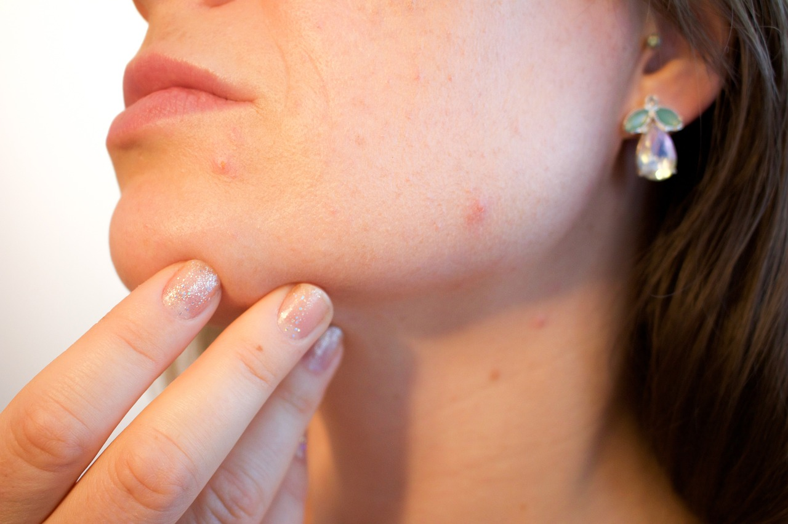

Worried about your Skin? Have a weird mole or rash?
We can help!
Why use Dermatology AI?
Dermatology AI allows people all over the world to get quality access to health care. Instead of waiting weeks to see a medical professional, Dermatology AI can give you a diagnosis in seconds.
Stop worrying about your skin!
Instead use Dermatology AI. Dermatology AI can diagnois up to 7 different skin conditions. These conditions range from cancerous conditions like Melanomas to noncancerous rashes.
Over 10,000 Americans get diagnosed with skin cancer every day.
With cancer, time is of the essence. Get reliable results quickly with Dermatology AI. Navigate to the Image Upload page now to start your diagnostic journey.